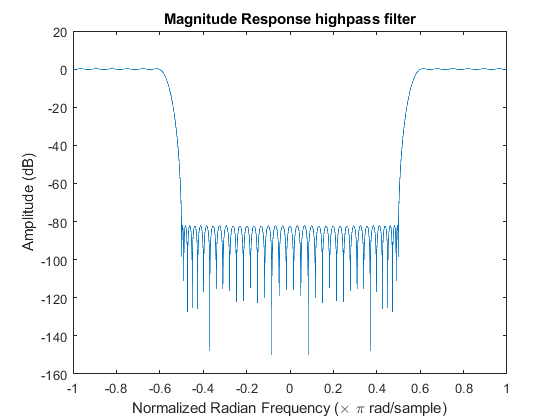

Contents
format compact
Lab 9
Exercise 9.1: (Effects of DFT size)
9.1a
x = [];
for n = 1:100
x(n) = 0.5+cos(pi*(n-1)/30)+cos(pi*(n-1)/5)+cos(pi*(n-1)+(2*pi/3));
end
type dtft
w = -pi:pi/2000:pi;
H = dtft(x,w);
figure(1);
subplot(2,1,1)
plot(w/pi,abs(H),'b-')
hold on;
title('Magnitude Response')
xlabel('Normalized Radian Frequency (\times \pi rad/sample)');
ylabel ('Amplitude');
subplot(2,1,2)
plot(w/pi,angle(H)/pi,'b-')
hold on;
title('Phase Response')
xlabel('Normalized Radian Frequency (\times \pi rad/sample)');
ylabel('Phase(\times \pi rad)');
function X = dtft(x, w)
%dtft Calculates X(e^jw) using inputs impulse response vector and
%frequency vector
X = zeros(1,length(w));
for k = 1:length(w)
for r = 1:length(x)
X(k)= X(k)+(x(r)*exp(-1j*w(k)*(r-1)));
end
end
end
9.1b
wfft = -pi:2*pi/128:pi-2*pi/128;
xfft = fft(x,128);
subplot(2,1,1)
plot(wfft/pi,fftshift(abs(xfft)),'rx');
hold off;
legend ('DTFT','DFT');
subplot(2,1,2)
plot(wfft/pi,fftshift(angle(xfft)/pi),'rx');
hold off;
legend ('DTFT','DFT');
9.1c
wdft = -pi:2*pi/512:pi-2*pi/512;
xdft = fft(x,512);
figure(2);
subplot(2,1,1)
plot(w/pi,abs(H),'b-')
hold on;
plot(wdft/pi,fftshift(abs(xdft)),'rx');
hold off;
legend ('DTFT','DFT');
title('Magnitude Response')
xlabel('Normalized Radian Frequency (\times \pi rad/sample)');
ylabel ('Amplitude');
subplot(2,1,2)
plot(w/pi,angle(H)/pi,'b-')
hold on;
plot(wdft/pi,fftshift(angle(xdft)/pi),'rx');
hold off;
legend ('DTFT','DFT');
title('Phase Response')
xlabel('Normalized Radian Frequency (\times \pi rad/sample)');
ylabel('Phase(\times \pi rad)');
9.1d
wdt = -pi:2*pi/64:pi-2*pi/64;
xdt = fft(x,64);
figure(3);
subplot(2,1,1)
plot(w/pi,abs(H),'b-')
hold on;
plot(wdt/pi,fftshift(abs(xdt)),'rx');
hold off;
legend ('DTFT','DFT');
title('Magnitude Response')
xlabel('Normalized Radian Frequency (\times \pi rad/sample)');
ylabel ('Amplitude');
subplot(2,1,2)
plot(w/pi,angle(H)/pi,'b-')
hold on;
plot(wdt/pi,fftshift(angle(xdt)/pi),'rx');
hold off;
legend ('DTFT','DFT');
title('Phase Response')
xlabel('Normalized Radian Frequency (\times \pi rad/sample)');
ylabel('Phase(\times \pi rad)');
Exercise 9.2: (Frequency-domain analysis using FFT)
9.2a
h
Hfilt = freqz(h,1,w);
figure(4);
plot(w/pi, 20*log10(abs(Hfilt)));
title('Magnitude Response highpass filter');
xlabel('Normalized Radian Frequency (\times \pi rad/sample)');
ylabel('Amplitude (dB)');
yconv = conv(x,h);
figure(5);
stem(1:length(yconv),yconv)
title('yconv');
xlabel('n');
ylabel('y[n]');
h =
Columns 1 through 7
-0.0003 0.0019 -0.0045 0.0055 -0.0024 -0.0029 0.0040
Columns 8 through 14
0.0012 -0.0055 0.0013 0.0064 -0.0050 -0.0057 0.0094
Columns 15 through 21
0.0027 -0.0135 0.0031 0.0159 -0.0118 -0.0150 0.0228
Columns 22 through 28
0.0089 -0.0349 0.0049 0.0468 -0.0310 -0.0568 0.0848
Columns 29 through 35
0.0634 -0.3109 0.4342 -0.3109 0.0634 0.0848 -0.0568
Columns 36 through 42
-0.0310 0.0468 0.0049 -0.0349 0.0089 0.0228 -0.0150
Columns 43 through 49
-0.0118 0.0159 0.0031 -0.0135 0.0027 0.0094 -0.0057
Columns 50 through 56
-0.0050 0.0064 0.0013 -0.0055 0.0012 0.0040 -0.0029
Columns 57 through 61
-0.0024 0.0055 -0.0045 0.0019 -0.0003


9.2b
xd = fft(x,256);
hd = fft(h,256);
DFTy256 = xd.*hd;
y256 = ifft(DFTy256,256);
figure(6);
stem(1:length(y256),y256)
title('y256');
xlabel('n');
ylabel('y256[n]');
9.2c
xx = fft(x,128);
hx = fft(h,128);
DFTy128 = xx.*hx;
y128 = ifft(DFTy128,128);
figure(7);
stem(1:length(y128),y128)
title('y128');
xlabel('n');
ylabel('y128[n]');